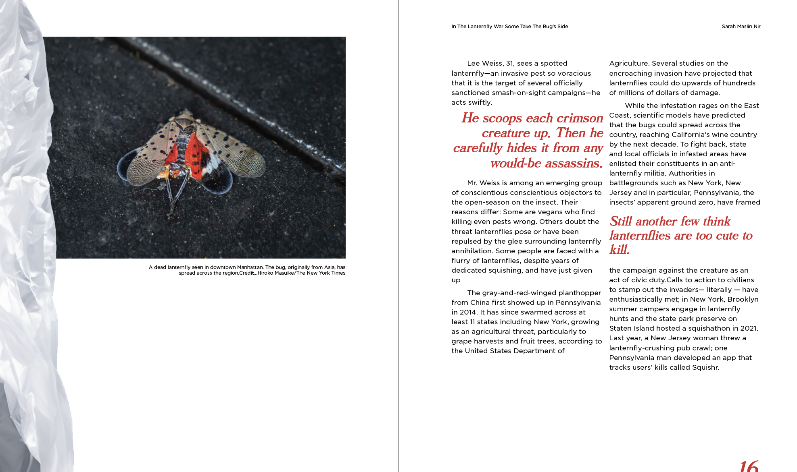
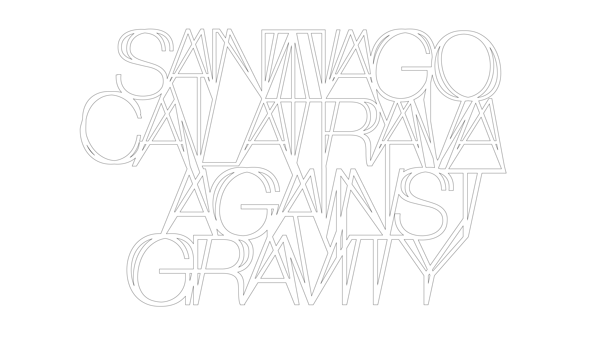

This project is supposed to exist in the moment just after someone sees a lanternfly, and just before their shoe crushes it. A mascot for questions without answers.
At first glance the lanternfly problem seems obvious: if you see an invasive species kill it.
But the first complication with the lanternfly is that it's beautiful. Researching the problem slowly unveils a web of interconnections, global trade relationships, colonialism, chinosire gardens, ecological homogenization. The lanternfly is attracted to the tree of heaven, a tree from its ecological home. What does it mean to be invasive?

This New York symbol, in a city many claim has lost its own identity to transplants, international reality and gentrifiers, style chameleons. Invasive species. Although these emotions come from a real place for many it's also a dangerous rhetoric, what has this place ever been but a strange collection of things?
This complicated bug could be the guide through other issues, and help us cope with uncertainty, and at the very least give pause to issues that once felt black and white,

magazine spreads and implmentation

Santiago Calatrava: Against Gravity is an identity for a fictional
exhibition featuring the architectural drawings of Santiago
Calatrava. Calatrava’s architecture, while fundamentally inspired by
the human form it's hard to say its grounded by any means, the
buildings often appear as spaceships ready for flight, intricate
detailing and ‘gravity’ defying they often seem to push the limits
of engineering and technology. What then underlines Calatrava's work
is a set of paradoxes, light and heavy, simple and ornate,
prehistoric and futuristic.

The logotype seeks to embody the features of Calatrava’s works,
through these paradoxes of something that is both light and heavy,
ornate yet simple. It's made from combining Helvetica Neue
Ultralight Regular and Italic to create a sense of imbalance. Then
the words are placed on top of each other and connected to provide a
sort of architectural structure.